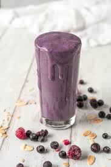

Berry Protein Shake

Description
This easy to make, healthy and delicious shake is sure ot help you hit your bulking goals while making it super easy to get those caloris and protein in.
Ingredients
- 1 1/2 Cups Milk
- 1 scoop protein powder
- 100g berries of your choice (I use a mix of blueberries, stawrberries and banana)
- 1 tablespoon flax seed
- Optional - 1 scoop ice cream
Steps
- Chuck everything into a blender
- Blend until constisency is to your liking
- Pour into glass and top up with more berries if wanted
- Enjoy :)